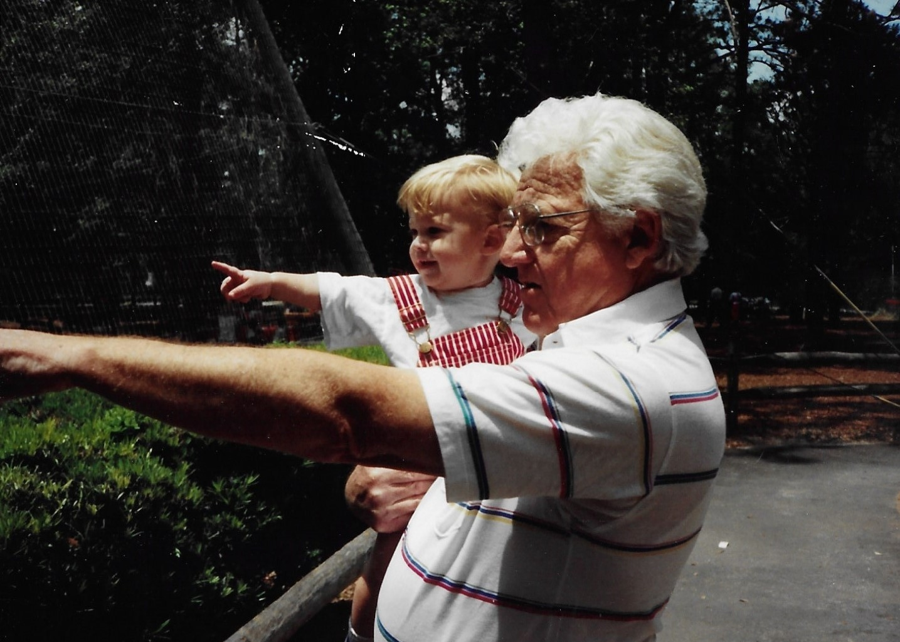

Monte Walter Korb

Monte attended Georgia Institute of Technology under the GI Bill and received his Bachelor of Mechanical Engineering in 1950. He went on to work with Wernher von Braun at Redstone Arsenal in Huntsville, Alabama — where America’s reach for the stars was being forged in fire and steel.
In 1965 he received a patent for a nozzle attachment for the control of range and thrust of solid propellant rocket motors — technology that flew on the Saturn V. He became a licensed Professional Engineer in Georgia in 1968.
In 1972, Monte founded Korb Engineering Company on St. Simons Island, Georgia. He practiced engineering for over forty years before retiring in 2014. Where every lineage begins, there is someone who chose to build. Monte chose to build rockets — and then a family legacy.